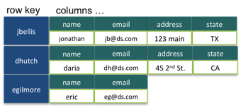

- on Sun 08 February 2015
Category: Software Engineering
In this blog post I wanted to provide a demonstration of how to use the Cassandra database system in a practical web application. We'll create a shoutbox app which you can think of as a very simple version of Twitter.
What is Cassandra?
Cassandra is a NoSQL distributed database system that is designed to deal with large amounts of data. Its key advantages are the following.
- Scalability: Allows you to increase capacity by adding cheap commodity hardware without any downtime.
- Fault Tolerant: There is data replications and no single point of failure so if a node goes down the system remains operational.
- Linear Performance: Throughput increases linearly with the number of nodes in the cluster.
- Data Flexibility: Supports many data formats and allows for a variable number of columns for each row.
In terms of the CAP theorem, Cassandra values availability and partition tolerance at the expence of consistency. This means that Cassandra uses eventual consistency which means that eventually the system will reach a consistent state but at any given time it is possible that different nodes can hold different versions of the same data. The actual architecture of Cassandra is beyond the scope of this blog post but it involves commit logs, memtables, and peer-to-peer gossip protocols.
How does Cassandra Work?
Column Families
Column families are similar to RDMS tables. Cassandra is a column-oriented database which means that columns are defined beforehand as well as the data format that each column can hold. Unlike the RDMS system, rows in Cassandra can contain any number of columns in any order like in the following example.

Cassandra also offers dynamic column families which allows the user to create a row that contains precomputed results that can be quickly retrieved. This is why Cassandra is described as a key-value database where column values can be quickly lookedup by their associated row key.
Keyspaces
Cassandra Keyspaces are similar to schemas in RDMS databases. A keyspace groups and applications column families together. Replication is done on a per-keyspace basis so data that resides in the same keyspace is replicated in the same way. There is usually one keyspace per application.
Denormalization
One of the disadvantages of Cassandra compared to RDMS databases is that it is not well-suited for ad-hoc complex queries. As a result you must know what queries you will need to perform beforehand and create your keyspaces accordingly. Cassandra does not have the same foreign key relationships that RDMS databases have therefore you cannot join multiple column families. As a consequence, the data that you want to retrieve in your queries should be contained in the same column family. Therefore the queries that you plan on performing will define your data model.
Building a Shoutbox App
Say you have developed a Twitter-like app where users can post their thoughts (shouts) as well as follow other users. Let's also assume that this app has exploded in popularity to the point where RDMS systems can no longer handle the huge amount of data so you turn to Cassandra. Let's learn how an app such as this can interact with Cassandra.
Queries we will Use
As stated previously, Cassandra uses denormalization which means that we need to first decide what queries we want to perform, then optimize our data model according to these queries. In our shoutbox app we would like to
- Show all users.
- Show who a user is following.
- Show who is following a user.
- Show the shouts of a particular user.
- Show all shouts.
Consequently, we will create the following column families to accomodate these queries.
- USERS which will contain username and password columns.
- FOLLOWING which will contain username and followed columns.
- FOLLOWERS which will contain username and following columns.
- SHOUTS which will contain shout_id, username, and body columns.
- USERSHOUTS which will contain username, shout_id, and body columns.
- SHOUTWALL which will contain username, shout_id, posted_by and body columns.
It may seem redundant to create all of these column families from the RDMS perspective but denomalization is necessary in Cassandra.
Creating the Column Families
We can actually create these column families using the CQL shell. But first we have to create the keyspace for our app which we will call shoutkeyspace.
CREATE KEYSPACE shoutkeyspace WITH REPLICATION - {'class' : 'SimpleStrategy', 'replication_factor' : 3};
In this example we will not be using multiple data centers so SimpleStrategy replication is used rather than NetworkTopology. We also use a replication_factor of 3 which indicates that our data will be replicated 3 times in our cluster. We will use this keyspace to create our column families with the USE shoutkeyspace; command.
Let's first create the USERS column family.
CREATE TABLE users(username text PRIMARY KEY, password text);
and now the FOLLOWING column family.
CREATE TABLE following(username text PRIMARY KEY, followed text);
and now the FOLLOWERS column family.
CREATE TABLE followers(username text PRIMARY KEY, following text);
and now the SHOUTS column family.
CREATE TABLE shouts(shout_id uuid PRIMARY KEY, username text, body text);
and now the USERSHOUTS column family.
CREATE TABLE usershouts(username text, shout_id timeuuid, body text, PRIMARY KEY(username, shout_id));
and finally the SHOUTWALL column family.
CREATE TABLE shoutwall(username text, shout_id timeuuid, posted_by text, body text, PRIMARY KEY(username, shout_id));
The columns associated with a PRIMARY KEY indicate the fields by which we will want to search our column families in our queries.
Inserting/Selecting Data
Inserting data into these column families will be done within the Node.js application but here is an example CQL statment to give you some idea.
INSERT INTO users(username, password) VALUES ('user1', 'password1');
Obviously this example is purely instructive and in a real-world application more security would be used with respect to storing passwords. You can also use batch commands to insert multiple values at once. Selecting data can also be done with the normal SQL syntax, note however that WHERE clauses can only be applied to indexed fields (i.e. fields that are assigned a primary key).
Creating the Node.js Frontend
The first step in creating a Node.js frontend that interacts with Cassandra is adding the Node.js Cassandra client driver to the package.json file. This driver will enable us to connect with the Cassandra database that we have just created. This can be done with the following code which should be added to the app.js file as well as any javascript file in which a Cassandra connection is made.
var client=new cassandra.Client({contactPoint : ['127.0.0.1']});
client.connect(function(err,result){
consolde.log('cassandra connected')
});
Note that in the above code we are connecting to a local instance of Cassandra. This client variable is what we will be using to execute our Cassandra queries
Displaying Users
The most basic function that we want our app to perform is displaying all of the users. To this end, we create a users.js file in the routes folder and add the following code.
var getAllUsers = 'SELECT * FROM shoutkeyspace.users';
router.get('/', function(req, res) {
client.execute(getAllUsers,[], function(err, result){
if(err){
res.status(404).send({msg: err});
} else {
res.render('users',{
users: result.rows
});
}
});
});
As you can see, the query to select all rows from the users column family is first saved as a string variable. Then inside the router.get() function, the Cassandra client variable that we defined eariler executes this query and if it is successfull, the corresponding users view is rendered with the query result. The users view is a jade file and for the purposes of this example it is very simple.
block content
h1 Users
ul
each user, i in users
li #{user.username}
The each user, i in users line loops through the query result from users.js and the resulting usernames are displayed in a list with #{user.username}.
Selecting Individual Users
Next we want to be able to select individual users from this list which will navigate us to a new page showing the selected user's information. We create a new file in the routes folder called user.js and the code is very similar to what we have seen before.
var getByUsername = 'SELECT * FROM shoutkeyspace.users WHERE username = ?';
router.get('/:username', function(req, res){
client.execute(getByUsername,[req.params.username], function(err, result){
if(err){
res.status(404).send({msg: err});
} else {
res.render('user',{
username: result.rows[0].username,
email: result.rows[0].email,
full_name: result.rows[0].full_name
});
}
});
});
You may have noticed the strange WHERE username = ? in the query string. This is because we have to be told which username we are selecting. This variable is passed into our query by the [req.params.username] parameter. If the query is executed successfully, the specified user's username, email, and full_name fields are sent to the user view. Again, the view is quite simple. It simply displays the fields sent to it in user.js.
block content
h1 User Info
ul
li Name:
strong #{full_name}
li Username:
strong #{username}
li Email Address
strong #{email}
Adding Users
Just like before we need to add a route and a view for adding a user. Let's call the route adduser.js. This will involve both a GET and a POST HTTP request - we need to get the data from the adduser form and then post it to Cassandra.
router.get('/', function(req, res){
res.render('adduser');
});
var upsertUser = 'INSERT INTO shoutkeyspace.users(username, password, email, full_name) VALUES(?,?,?,?)';
router.post('/', function(req, res){
client.execute(upsertUser, [req.body.username, req.body.password, req.body.email, req.body.full_name],
function(err, result){
if(err){
res.status(404).send({msg: err});
} else{
console.log('User Added');
res.redirect('/users');
}
});
});
So first we use use a GET request to render the adduser view. This view contains the form where the required data is added (username, password, email, full_name).
block content
h1 Add User
form#formAddUser(name="adduser", method="post", action="/adduser")
div
input#inputUserName(type="text", placeholder="Enter Username" name="username")
div
input#inputPassword(type="password", placeholder="Enter Password" name="password")
div
input#inputEmail(type="text", placeholder="Enter Email" name="email")
div
input#inputFullName(type="text", placeholder="Enter Full Name" name="full_name")
div
button#btnSubmit(type="submit") Submit
Then we define our query to insert a new user into our Cassandra users column family. We then execute this query with the required fields and if successfull we redirect to the users view which should now contain our new user.
Updating Users
We also want the ability for a user to update their information. To edit a user's information, we want to present the same form as when the user was intially added with the same information already in the form's fields so that modification is easy. Again, let's make an edituser route and view. The edituser.js route looks like the following.
var getByUsername = 'SELECT * FROM shoutkeyspace.users WHERE username = ?';
router.get('/:username', function(req, res){
client.execute(getByUsername,[req.params.username], function(err,result){
if(err){
res.status(404).send({msg: err});
} else {
res.render('edituser', {
username: result.rows[0].username,
email: result.rows[0].email,
full_name: result.rows[0].full_name,
password: result.rows[0].password
});
}
});
});
var upsertUser = 'INSERT INTO shoutkeyspace.users(username, password, email, full_name) VALUES(?,?,?,?)';
router.post('/', function(req, res){
client.execute(upsertUser, [req.body.username, req.body.password, req.body.email, req.body.full_name],
function(err, result){
if(err){
res.status(404).send({msg: err});
} else{
console.log('User Updated');
res.redirect('/user/'+ req.body.username);
}
});
});
First we execute a Cassandra query to get the information needed to populate the form. When this is executed, the edituser view is rendered with form information from the query result appearing in the fields. The rest is exactly the same as adduser. Furthermore, the edituser view is almost exactly the same as the adduser.js view (with action=/adduser replaced with action=/edituser and the passed in values added) so I will not show it.
Deleting Users
We also want to be able to delete users. To do this we add the following code to the user.js route.
var deleteUser = "DELETE FROM shoutkeyspace.users WHERE username = ?";
router.delete('/:username', function(req, res){
client.execute(deleteUser,[req.params.username], function(err, result){
if(err){
res.status(404).send({msg: err});
} else {
res.json(result);
}
});
});
First we create the delete query and execute it as usual. However, we still need a way of creating this DELETE request when the deleteuser button is clicked. We will do this with JQuery and AJAX. We create a main.js file in the /public/javascripts folder which contains the following JQuery code.
$(document).ready(function(){
$('.deleteuser').on('click', deleteUser);
});
function deleteUser(){
event.preventDefault();
var confirmation = confirm('Are you sure that you want to delete this user?');
if(confirmation){
$.ajax({
type: 'DELETE',
url: '/user/'+ $('.deleteuser').data('user')
}).done(function(response){
window.location.replace('/users');
});
} else {
return false;
}
}
So when the deleteuser button is clicked, the deleteUser() function is called which uses AJAX to send the DELETE request to the correct URL.
Displaying Shouts
Now let's turn our attention to displaying shouts. Again we must create a shouts route and view. Our shouts.js route should look like the following.
var getAllShouts = 'SELECT * FROM shoutkeyspace.shouts';
router.get('/', function(req, res){
client.execute(getAllShouts,[], function(err, result){
if(err){
res.status(404).send({msg: err});
} else {
res.render('shouts',{
shouts: result.rows
});
}
});
});
var getUserShouts = 'SELECT * FROM shoutkeyspace.usershouts WHERE username = ?';
router.get('/:username', function(req, res){
client.execute(getUserShouts, [req.params.username], function(err, result){
if(err){
res.status(404).send({msg: err});
} else {
res.render('shouts',{
shouts: result.rows
});
}
});
});
By now, this should be quite straight-forward. The first GET request displays all shouts to the shouts view from the Cassandra query and the second GET request displays a specified user's shouts to the shouts view from another Cassandra query.
Adding Shouts
The final piece of the puzzle is enabling users to add shouts. On the view side, this can be done with the following form.
form#formAddShout(name="addshout", method="post", action="/addshout")
div
select(name="username")
option(value="devuser1") devuser1
option(value="devuser2") devuser2
option(value="devuser3") devuser3
option(value="devuser4") devuser4
br
div
textarea(name="body", placeholder="Shout Something!", cols="50", rows="5")
br
div
button#btnSubmit(type="submit") Submit
This form contains a textarea in which the user can write their shout as well as the ability to post it as a specific user (ideally you would have a login system but this is beyond the scope of this app). Next we create the route as the following.
router.post('/', function(req, res){
var id1 = cassandra.types.uuid();
var id2 = cassandra.types.timeuuid();
var queries = [
{
query: 'INSERT INTO shoutkeyspace.shouts(shout_id, username, body) VALUES(?,?,?)',
params:[id1, req.body.username, req.body.body]
},
{
query: 'INSERT INTO shoutkeyspace.usershouts(username, shout_id, body) VALUES(?,?,?)',
params: [req.body.username, id2, req.body.body]
}
];
queryOptions = {};
client.batch(queries, queryOptions, function(err){
console.log(err);
res.redirect('/shouts');
});
});
Here we use a Cassandra batch query to insert the added shout into both the shouts and usershouts keyspaces.
And that covers the basic functionality of our simple shoutbox app. In summary, we have given a brief overview of Cassandra, added our keyspaces and column families for our app as well a built a Node.js frontend to connect with our Cassandra database.
References
- Github repo for the code used in this blog post.
- Datastax where you can download the free Cassandra community edition as well as learn more about Cassandra.
- nodejs.org where you can download and learn more about Node.js.